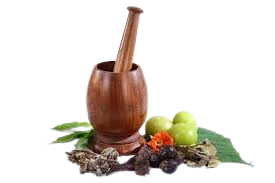
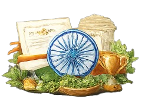

🌿 Explore our 3D Plant Viewer! Rotate, zoom and interact with herbal plants in 3D 🌱 ➤ Available now in Plants section
🌿 Explore our 3D Plant Viewer! Rotate, zoom and interact with herbal plants in 3D 🌱 ➤ Available now in Plants section
Vedic Origin
Ayurveda is believed to have originated during the Atharva Veda, one of the four sacred Vedas.
The Atharva Veda contains early knowledge about:
Healing herbs 🌱
Diseases 🦠
Spiritual therapies 🧘
Ayurveda means:
👉 “Ayur” = life
👉 “Veda” = knowledge
➤ So, Ayurveda = “Science of Life”
It was developed by ancient sages (Rishis) who combined:
Observation of nature 🌍
Meditation 🧘
Experience of human body
Later, this knowledge was expanded in classical texts like:
Charaka Samhita (medicine & internal health)
Sushruta Samhita (surgery & anatomy)
Ancient Texts
The knowledge of Ayurveda was systematically written in ancient Indian scriptures known as Samhitas.
🌿 Key Texts:
Charaka Samhita
Focuses on medicine, diagnosis, and internal healing. It explains how to maintain health and treat diseases using natural methods.
Sushruta Samhita
Deals with surgery and anatomy. It describes surgical techniques, instruments, and is why Sushruta is called the Father of Surgery.
Ashtanga Hridaya
A simplified and well-organized text combining teachings of Charaka and Sushruta, widely used for learning Ayurveda.
Sushruta
Sushruta was one of the greatest ancient Indian physicians and a pioneer of surgery in Ayurveda.
🌿 Key Contributions:
Author of the Sushruta Samhita
Known as the “Father of Surgery” 🏥
Described over 300 surgical procedures
Used 120+ surgical instruments 🔪
Performed early forms of plastic surgery (like nose reconstruction)
Explained human anatomy in detail, including bones, muscles, and veins
Emphasized cleanliness and hygiene during surgeries (early concept of sterilization)
Trained students using practical methods like practicing on fruits and dead bodies

Branches
Ayurveda is divided into eight main branches, known as Ashtanga Ayurveda.
🌱 The 8 Branches:
Kayachikitsa– General medicine (treatment of diseases)
Shalya Tantra – Surgery
Shalakya Tantra – Eye, ear, nose, and throat (ENT)
Kaumarbhritya – Pediatrics (child care) 👶
Agada Tantra – Toxicology (treatment of poisons) ☠️
Bhuta Vidya – Psychiatry (mental health) 🧠
Rasayana – Rejuvenation and immunity boosting 🌿
Vajikarana – Reproductive health and vitality
Global Spread
Ayurveda gradually spread beyond India and influenced many other traditional healing systems.
🌿 Key Points:
Ayurveda spread to countries like China, Tibet, and the Middle East through trade and cultural exchange
Its knowledge influenced systems like Traditional Chinese Medicine and Tibetan medicine
Ancient scholars and travelers carried Ayurvedic texts and practices across regions
Today, Ayurveda is practiced worldwide as a form of natural and holistic healing 🌿

Modern Use
Promoted by the Ministry of AYUSH in India
Used for improving immunity, digestion, and overall wellness
Includes practices like:
Herbal medicines 🌱
Yoga and meditation 🧘
Detox therapies (Panchakarma)
Gaining popularity worldwide as an alternative and preventive medicine system
Used alongside modern medicine for a balanced lifestyle